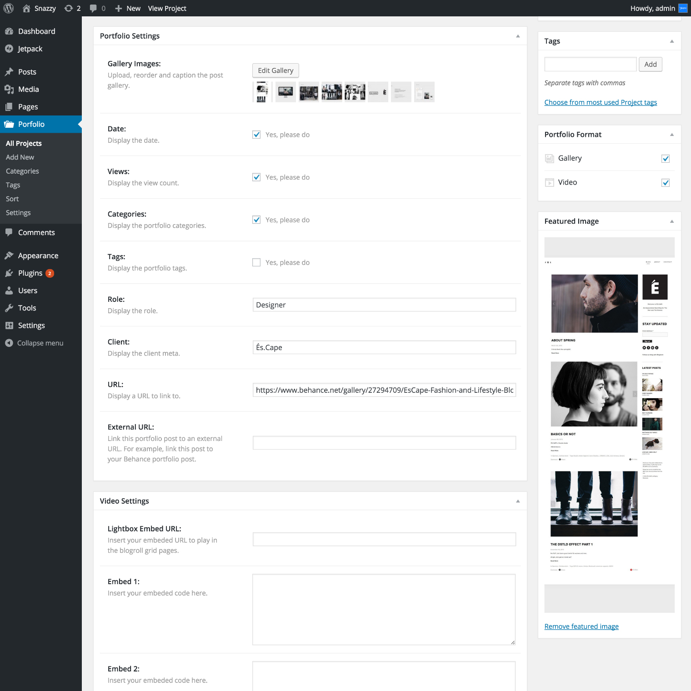
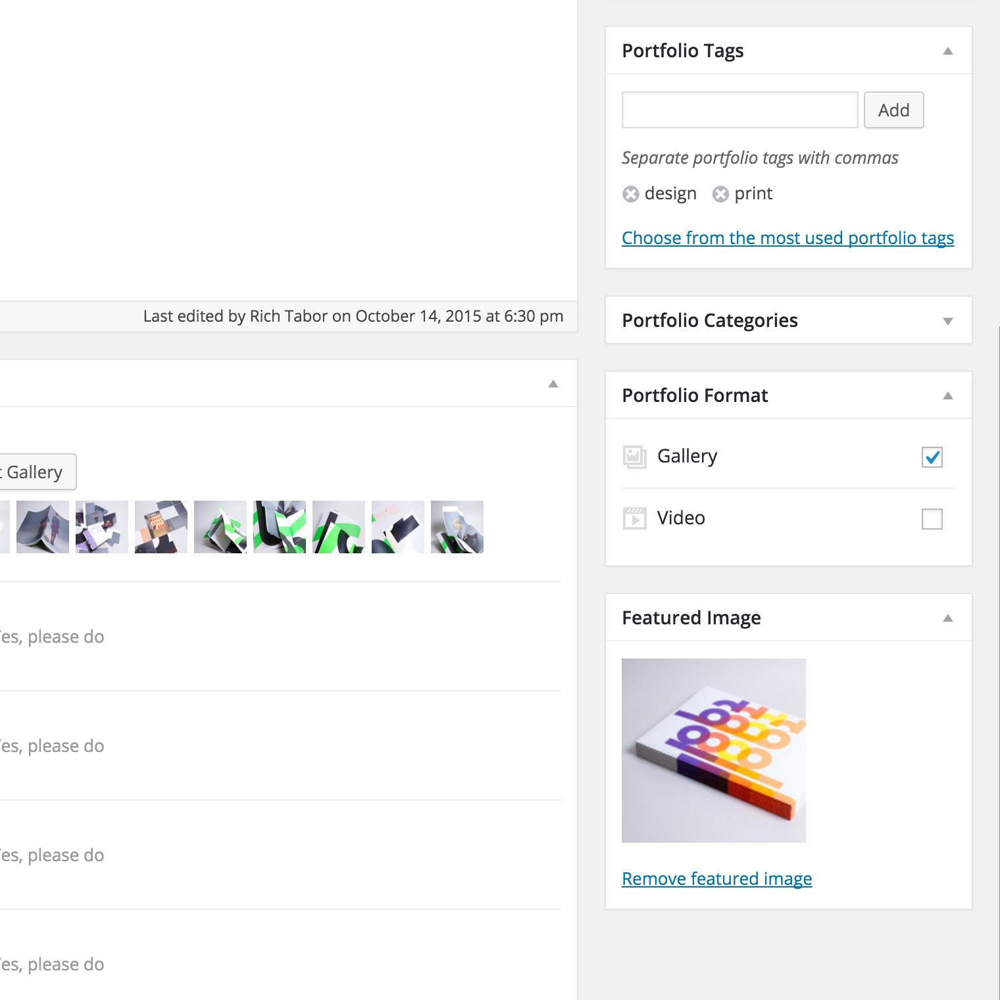
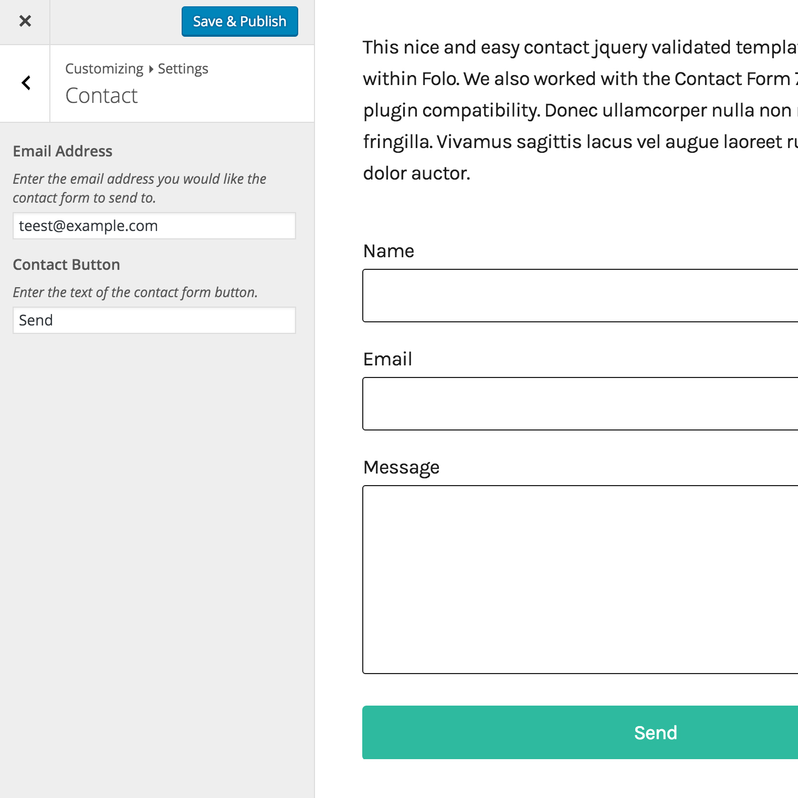
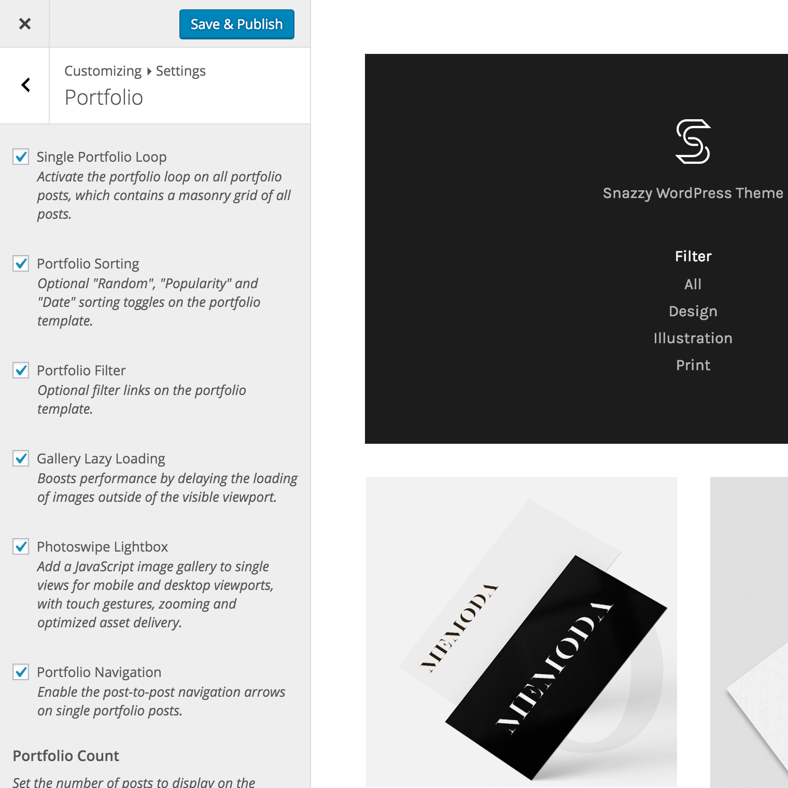
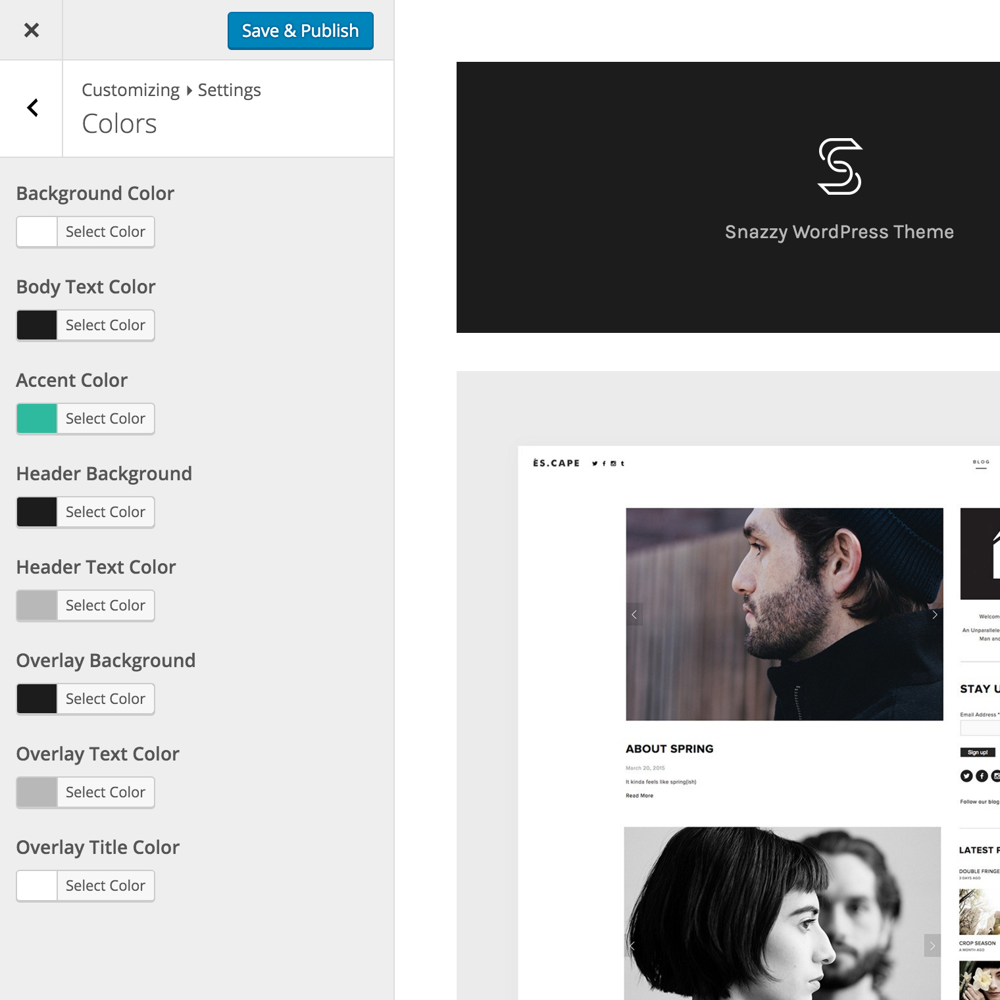
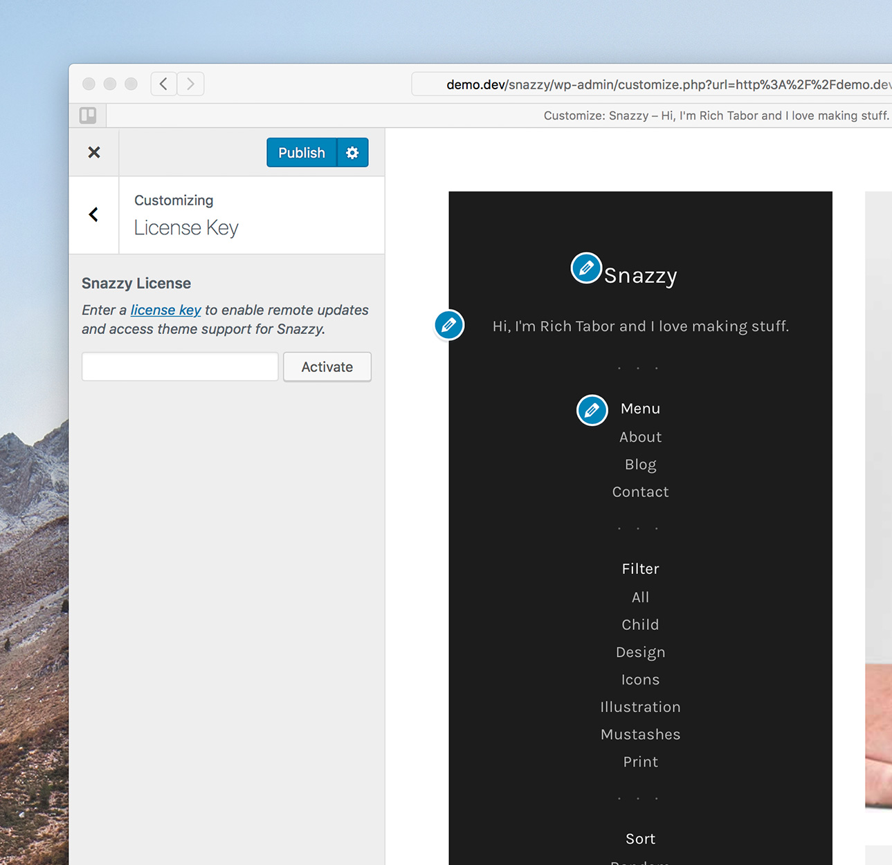
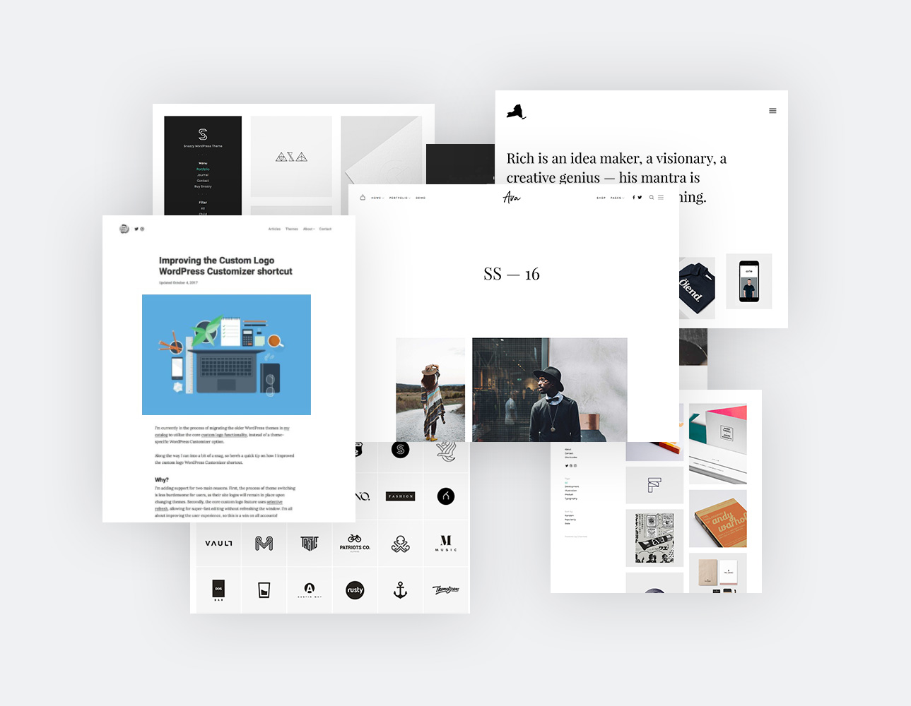

Set-up & general guide to help you get the most out of your new WordPress theme. If you are still having trouble after reading this guide, contact our help team.
This document covers the installation, set up, and use of this theme, and provides answers and solutions to common problems. We encourage you to first read this document thoroughly if you are experiencing any difficulties before contacting our support team.
To upload through your Dashboard, select “Appearance” and then “Themes”. Next, select the “Install Themes” tab at the top of the page and then select the “Upload” link, right above the search field. Choose your file and select “Install Now”. Once the theme is fully uploaded and installed, click “Activate” to activate the WordPress theme.
The theme files will be stored on your server in the wp-content/themes location.
When uploading your theme with the installer, please ensure you are uploading the theme .zip file, not the entire package you downloaded. In this case, you will be uploading snazzy.zip.
To manually upload your new WordPress theme, login with your credentials to your website and locate the wp-content folder in your WordPress install files. Upload the un-zipped Snazzy folder into the: wp-content/themes folder.
Once uploaded, activate the theme by heading to the “Themes” menu in the WordPress Dashboard. Locate the Snazzy theme and hit “Activate”.
Located inside the /customizer folder within the package contents, you'll find a snazzy-export.dat file. This file contains the live demo's Theme Customizer options.
To import, first install and activate the Customizer Export/Import WordPress plugin, which is available as a free download. After you're successfully running the plugin, head to your Theme Customizer and look for the Export/Import section.
Import the snazzy-export.dat file with the uploader and hit "Import".
Find out more on installing and activating plugins.
If you're looking for WordPress theme installation and setup to look exactly like the live theme demo - then we're here to help. Fast & simple for only $69.
Get the advanced Theme Setup service →
Our in-house team of professional developers will install the theme, upload the demo XML file, and setup your website exactly like the live demo. Frustration free. Complete your purchase of the Theme Setup service by clicking the link above and send us your deliverables.
If you have a problem with the theme or found a bug, please let us know via our official Help Center. We take pride in our customer support and we will do what we can to assist you. If you are experiencing a theme issue, please first turn off all third party plugins to see if the problem persists.
If you have any questions that are beyond the scope of this document, feel free to ask us via our dedicated help center.
Snazzy has the following templates built into the theme and can be applied by creating and saving a page in WordPress.
You need to first create a page using the Portfolio Template. This template will pull your published portfolio posts.
Upload a featured image (any size) and it will be automatically applied throughout all the neccessary templates and loops.
This is where you will add your images to the post by clicking the "Browse & Upload" button. You have the capability to rearrange, caption, add more and remove images from the popup modal that appears.
Just remember to hit Save Gallery and you're all set.
Snazzy is capable of outputting gallery and video portfolio posts (embedded - e.g. Vimeo & YouTube). To change the type of portfolio to display, click on the checkboxes under the "Portfolio Format" metabox, located beneath the Portfolio Categories, on the right hand side of your window.
Mix or match video and gallery posts on the same post.
Each portfolio post has selectable meta options that you may choose to use on each individual post. You can set the date, client, role, url, elect to display the categories, tags, views and the portfolio post title.
You can also add an external URL to which your post loop will link to a different URL than it's single post page. For example, you can create a post with a featured image and an external link to your Behance project page - then promote that project within the portfolio templates.
Located within the Theme Customizer you will find a Portfolio section within the Settings panel. Here you may elect to enable the singular portfolio loop, portfolio sorting, lazy-loading, photoswipe and enter your portfolio count.
To set up the Contact Template, simply create a page using the "Contact" template and publish it. Within the Customizer's Settings panel you'll find a Contact section. This is where you'll add your contact email address and customize the Contact Button if you wish.
The following widgets are provided with our compatible array of free plugins.
To employ a widget, simply go to your Widgets editor (located in your WordPress Dashboard in the “Appearance” menu) and drag your widgets into the specified widget areas.
To access the live Customizer, you may select the Customize button in the admin bar dropdown or select "Customize" from the Dashboard menu. Note that you must be logged in as a site administrator in order to access the controls.
Set your site title, tagline, logo and the site icon and retinafy your logo. You can also elect to display the header tagline or not.
This section contains the options for the theme. The sections within this panel are Portfolio, Contact, Footer and Colors
Enable the single portfolio/page loop to display on all posts. Also decide if you'd like the portfolio sorting enabled, the filter enabled, gallery lazy loading active, post-to-post navigation and the Photoswipe lightbox activated. Lastly, enter the number of posts you'd like displayed originally on your portfolio template.

Set your contact form email address and customize the form submit button.
Turn on/off the "Powered by Snazzy" and "A WordPress run site. Nice"
Easily manipulate the theme accent color and other elements throughout the theme with the color picker in this tab.
To install any of our free plugins, head over to our website and simply download the plugin files. Once you’ve successfully downloaded a zip file, head to your WordPress Dashboard and select “Plugins > Add New > Upload.”
Add the zipped file in the field there and click “Upload.” Upon a successful upload, you’ll be prompted to activate the plugin.
Snazzy is compatible with many of our custom developed WordPress Plugins. Head over to our website and download our free plugins now →
Each graphical asset has an associated retina image that should be modified when customizing assets in this theme. You will find these retina assets in their respective image locations.
Additionally, if the image size has changed, the background-size property of the associated class in /style.css must be modified to reflect those changes. You can find this in the Retina CSS section at the very bottom of the main stylesheet.
Snazzy has particular @3x CSS located in mobile.css, which utilizes the images appended with @3x ex: sprite@3x.png within the /assets/images/retina folder on HiDPI screens.
If you'd like to add more @3x assets, simple save your image at 300% (we use Photoshop) and add it to the /assets/images/retina folder. Then look for the following CSS at the bottom of mobile.css and add your CSS element with a background image pointing to your new image:
You may need to add the background-size attribute to the element if you have not already added it to the standard retina query.
If you've requested and entered your theme license key, then you'll automatically be notified of any theme updates as we push them. This is the most effective method for getting updates pushed to you quickly and effienctly. Read more about theme licenses.
To check your theme version, click the live changelog link below and check the version number at the top of the changelog.txt file:
View the Snazzy theme changelog →
Relay the changelog version at the top of that changelog.txt file with the version in your WordPress Dashboard > Appearance > Themes section to see if your theme files are up to date.
If you are in need of the update, download the current build from the location you purchased the theme from (either ThemeForest, Creative Market or via your account dashboard) to install the updated theme.
If you have an active license key applied to your theme, you will receive live update notifications to which allows one-click updates directly from your WordPress dashboard.
If you have not customized the original theme files then you may simply drop the updated theme folder contents into the theme folder on your server – which is located in wp-content/themes/snazzy.
If you wish to upload the entire updated theme as a separate theme, ensure you:
If you choose to upload the whole theme and switch to it, you may lose your Theme Customizer data and will have to add those back in.
On the other hand, if you have customized some files in the core theme contents, you should consider selective updating, which simply means updating only the files that are pointed out in the theme’s changelog.
There are a couple programs out there that will allow you to compare versions of files, in order to catch customizations you may not remember. Some recommended programs are WinMerge (Windows), Kaleidoscope (OSX), and handy GitHub (OSX) & (Windows).
Overall, the safest and cleanest way to update your theme is to leave your currently modified theme on your server/site as is, rename the folder of the newly updated theme, upload the new theme, and modify that to match your original custom work. In this way, if something has gone wrong with the new version, you’re just a few clicks away from getting things back to how they originally were.
Please note that ThemeBeans is not responsible for content loss, database errors and such, which may happen to your WordPress install upon an incorrectly applied theme update.
It’s strongly recommended that you add your theme’s license key from within the License section of the WordPress Customizer. By adding your key, you will activate the remote theme updates and have access to our support team.
You can find your theme’s license key by checking your purchase receipt or signing in to your ThemeBeans account. If you purchased the theme from ThemeForest, you may request your license key here. You’ll need your ThemeForest purchase code handy.
Copy this key and navigate to the Customizer License Control located within the WordPress Dashboard > Customizer > Theme License section. Enter your license key and hit activate.
You'll see a "Verified" report upon a successful activation. If the license does not activate, please refresh and try again.
Please note that licenses are only given for Charmed Pro - not the free version.
It is important to keep your license up to date in order to continue getting updates for your ThemeBeans WordPress theme and support for any issues you may encounter. Renewing your license grants you access to support and updates for another year, including all updates for bug fixes and feature introductions.
Without a valid theme license, you will be unable to get support and auto-update notifications will not function.
If your key is not activated after hitting the Activate button, simply refresh the Customizer and try again. Sometimes it takes a second try to properly establish a connection with the activation server.
After a year, license keys may be renewed. You will get a renewal notification on your WordPress dashboard if your license is about to expire, or has in fact expired.
A child theme is a theme that inherits the functionality and styling of another theme, called the parent theme. Child themes are the recommended way of modifying an existing theme.
There are one main reason why you would want to use a child theme: If you modify a theme directly and it is updated, then your modifications WILL be lost. By using a child theme you will ensure that your modifications are preserved.
Log in to your site's administration panel, and go to Administration Panels > Appearance > Themes. Click "Add New" and follow the directions to upload the snazzy-child.zip file, located in the snazzy-package/theme/ folder.
Next simply click "Activate" and both the Snazzy theme and Snazzy child theme will be active on your WordPress site. Now you're ready to customize away.
Note that this is the same exact method we referred to in the Getting Started section of this guide. You should see your child theme listed and ready for activation.
If you want to change more than just the stylesheet, your child theme can override any file in the parent theme: simply include a file of the same name in the child theme directory, and it will override the equivalent file in the parent theme directory when your site loads.
For instance, if you want to change the PHP code for the site header, you can include a header.php in your child theme's directory, and that file will be used instead of the parent theme's header.php.
Unlike style.css, the functions.php of a child theme does not override its counterpart from the parent. Instead, it is loaded in addition to the parent’s functions.php. (Specifically, it is loaded right before the parent’s file.)
In that way, the functions.php of a child theme provides a smart, trouble-free method of modifying the functionality of a parent theme.
Say that you want to add a PHP function to your theme. The fastest way would be to open the snazzy/functions.php file and put the function there... But that’s not smart: The next time Snazzy is updated, your function will disappear (as the entire contents of the /snazzy/ folder are replaced upon an update.
However, there is an alternative way which is the smart way: you can create a child theme, add a functions.php file in it, and add your function to that file. The function will do the exact same job from there too, with the advantage that it will not be affected by future updates of the parent theme.
DO NOT copy the full content of functions.php of the parent theme into functions.php in the child theme. It's not a good practice by any means.
You can use this same exact methodology to modify functions that are within the parent theme's files. Let's take a quick look at an example.
Below is an example of a typical function within most of our WordPress themes - a template tag that pulls in the site archives.
Say you wanted to change the titles of each section (Monthly, Yearly, Categories). You would find this function (located in the snazzy/inc/template-tags.php file) then copy it over to the child theme like such:
And then edit the text as you see fit. This function will load before the one in the theme, which is pluggable —that is, replaceable by a child theme— conditionally.
Note that this example is for this specifcic function, buy you can do the same with any pluggable function that contains the following:To learn more, read the this article on the WordPress Codex →
Download our entire WordPress theme catalog, plus every theme we make in the next year, for less than the price of two!
Wether you’re a suave freelancer knocking out WordPress websites for clients or just like to freshen up your portfolio every so often (or both!), the ThemeBeans Theme Club has the most beautiful WordPress themes around – so join today!
If you've just purchased a theme but would like to join to the ThemeBeans Club, you can easily upgrade at a pro-rated rate. 🙌
Simply log into your ThemeBeans account and click the Upgrade to Club link at the top right, under your profile avatar. Complete the checkout process and you'll have instant access to the entire ThemeBeans WordPress theme catalog.